Applied UX Research for Technical Solutions — improving user experience and industry standards for Keysight PathWave Measurement Analytics.
Overview
PathWave Measurement Analytics (PWMA) is a data visualisation and analytics software by Keysight Technologies. The primary users are Test and Design Engineers who capture and simulate test data, run physical tests, store results, and analyse them using PWMA.
This project was completed as part of the MHCI Capstone at UC Santa Cruz in collaboration with Keysight Technologies. The goal was to enhance PWMA's user experience by understanding target users' needs and behaviours, and providing design recommendations grounded in primary and secondary research.
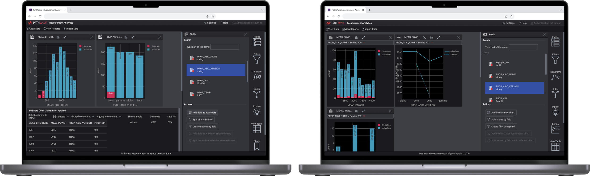
Problem
Users reported UX issues with PathWave Measurement Analytics despite its robust capabilities. Engineers frequently preferred alternative software like Excel, Tableau, and Spotfire for data analysis and exploration tasks — a costly workaround that Keysight wanted to address.
What specific pain points prevent users from getting value from PWMA's core features?
What design and UX changes would encourage users to adopt PWMA as their primary analytics tool?
Research Process
We began with a literature review and competitive analysis. Secondary research showed Keysight has a unique value proposition — combining hardware and software solutions — different from competitors like JMP, Spotfire, and Zoho Analytics. We then shifted focus to understanding user perception through two core methods.
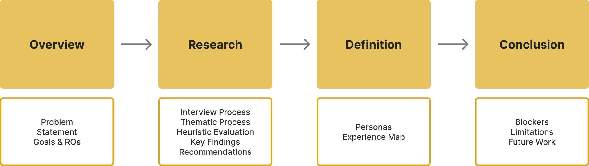
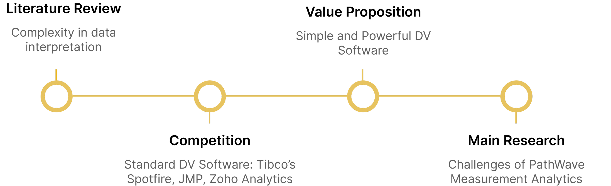
We recruited 5 internal Keysight users based on their experience and time spent with PWMA, educational background, and role within the company. We conducted 8 sessions across two rounds:
Screener Round — 30-minute semi-structured interviews with all 5 participants to gauge existing usability issues.
Observation Round — 60-minute screen-share sessions with 3 participants, walking through real tasks and observing interactions.
After gathering interview transcripts, we coded the data into major categories of pain points. The three categories with the most complaints were: feature-specific challenges, intuitiveness problems, and lack of accessibility features.
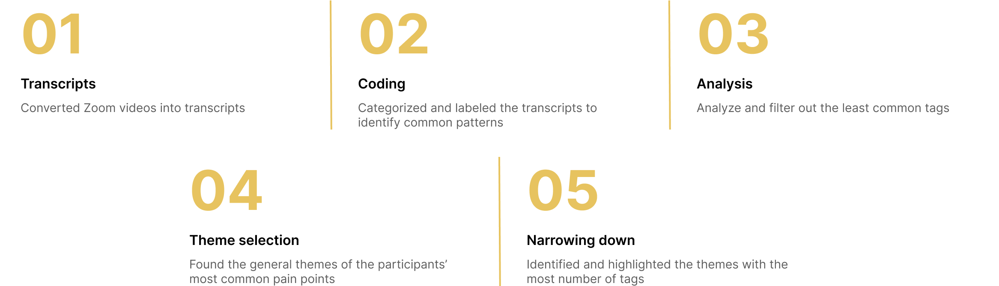
We assessed PWMA's interface using Nielsen's 10 Heuristic Principles, with two evaluators independently scoring each principle on a 0–4 severity scale. The evaluation helped prioritise core usability issues and reconfirmed findings from the interviews.
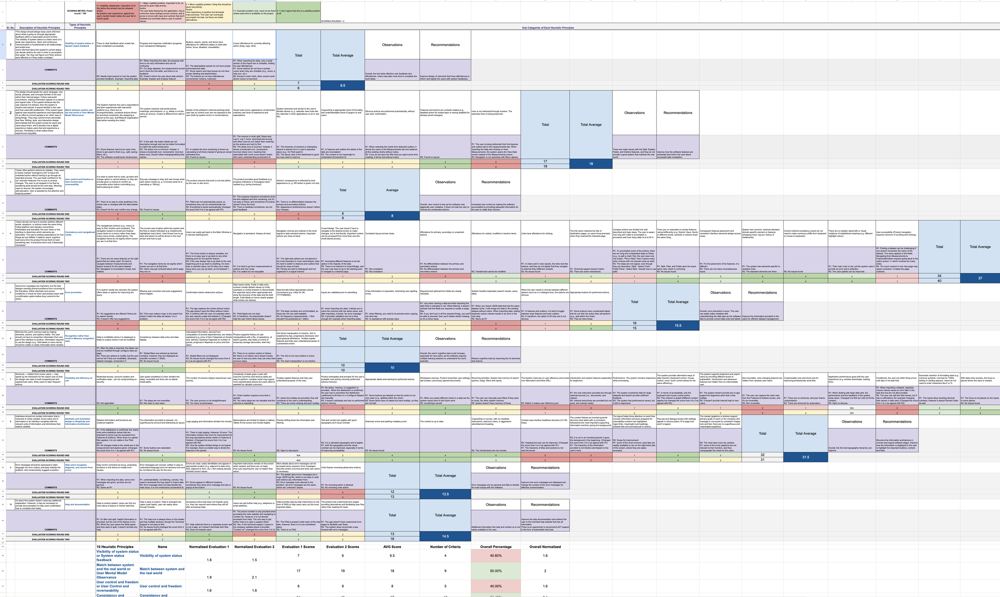
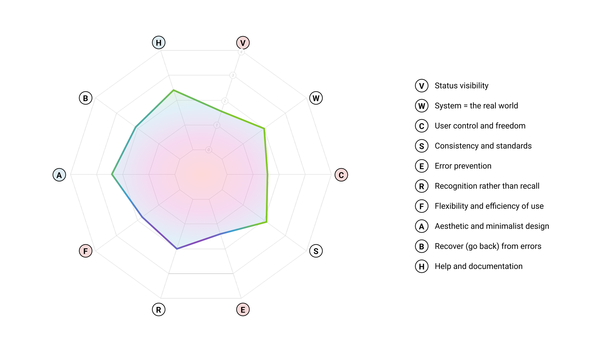
Based on the evaluation, PWMA scored particularly low on Status Visibility, User Control, Error Prevention, and Flexibility. The overall usability score was 1.9/4 (below 50%).
Key Findings
Users reported that it takes too many clicks to create a chart, and the result often isn't what they expected. The plotting procedure also lacked transparency.
"You just did a bunch of clicks and potentially waited five seconds for the chart to load, and then you don't have the chart you want."
— Interview participant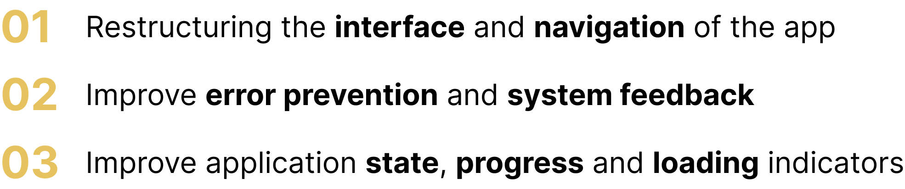
Users arrived with expectations from other tools (Excel, Spotfire). A key conflict: clicking and dragging across a chart in PWMA zooms in rather than selecting values — the opposite of what users expect.
"My intuition says when I click on the graph, the cursor will be a selection tool — but instead it works as the zoom cursor."
— Interview participant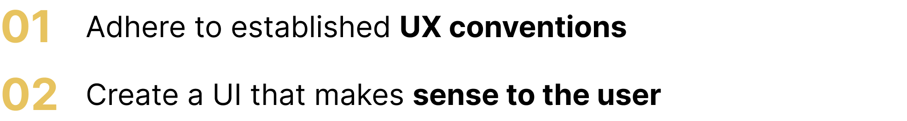
Several participants noted excessive cognitive load — needing to memorise values like mean and standard deviation. A Chartability heuristic evaluation revealed an overall score of 2.37/4 (59%), with notable issues around colour contrast for users with colour vision deficiencies.
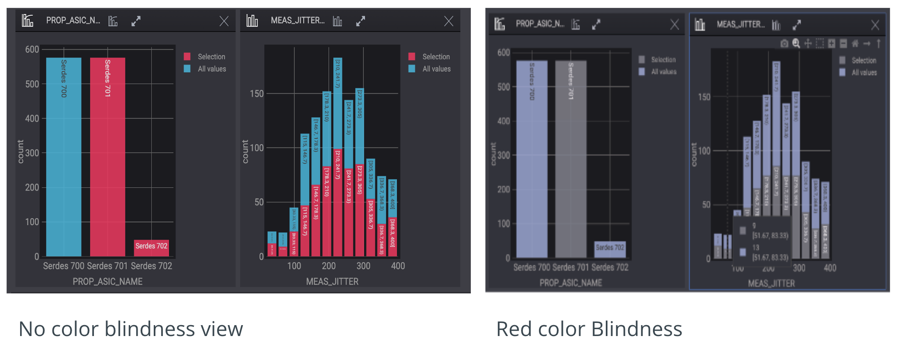
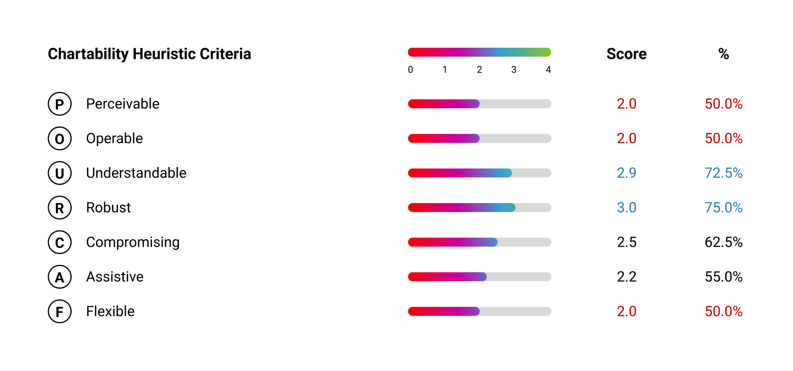
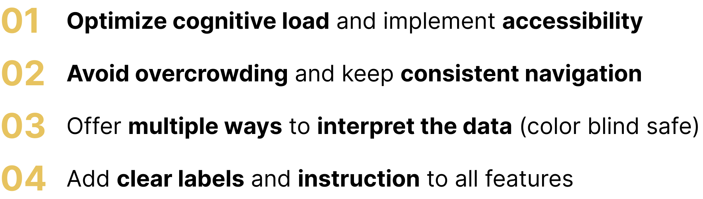
Synthesis
We created user personas and a customer experience map to visualise pain points and design opportunities at each stage of the workflow.
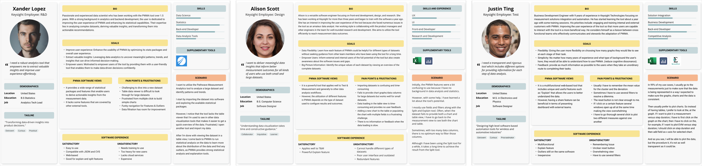
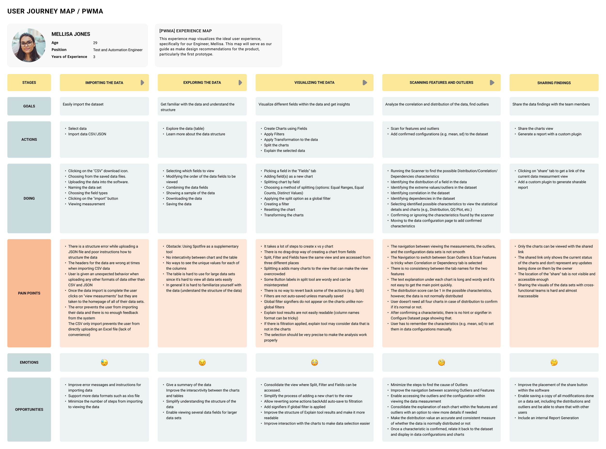
Blockers & Future Work
Budget, resource, and time constraints limited the depth of analysis. A small internal participant pool reduced diversity in persona generation. Future work includes collaborating with sponsors to prioritise design goals, expand recruitment to external participants, and implement usability and accessibility improvements based on our findings.